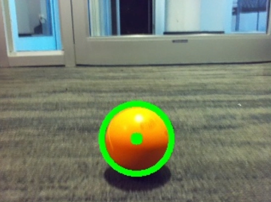

Autonomous AI Fetch Robot
This personal project involved designing and building a car robot equipped with a Raspberry Pi, a camera, IR, and ultrasonic sensors.
The goal was to create a robot capable of detecting and following a person using OpenCV for body and ball contour
recognition, picking up a dropped ball, and returning it. The project was made more challenging by the constraint of a lack of absolute positioning sensors, such as gyroscope or IMUs, or LIDAR. The design required integrating the frame, connecting electrical
components, and overcoming challenges related to sensor coordination and object detection.
Process and methodology
 The development of the Autonomous AI Fetch Robot began with designing a lightweight and stable laser-cut acrylic frame to house the
electrical components, ensuring accessibility for wiring and adjustments.
The development of the Autonomous AI Fetch Robot began with designing a lightweight and stable laser-cut acrylic frame to house the
electrical components, ensuring accessibility for wiring and adjustments.
The robot was equipped with a Raspberry Pi for
computation, a camera for vision processing, and IR and ultrasonic sensors for object detection and obstacle avoidance.
Using Python and OpenCV, the robot’s computer vision capabilities were implemented to recognize body and ball contours.
The integration of sensors required precise calibration to ensure accurate distance measurements and reliable object
detection in varying environments. Testing and iterative refinement were critical to optimizing the robot’s ability to
detect and follow a moving person, locate and retrieve a dropped ball, and return it successfully.
Reasoning and reflection

The absence of absolute positioning sensors such as gyroscopes or LIDAR posed a significant challenge, requiring
creative problem-solving to ensure the robot’s functionality. By leveraging the camera for vision-based navigation and
combining sensor data from IR and ultrasonic components, a robust and cost-effective alternative was developed.
The
project highlighted the importance of balancing hardware constraints with software solutions, such as compensating for
sensor limitations through advanced image processing techniques. Reflecting on the project, the iterative process of
testing and debugging reinforced the value of adaptability and persistence in addressing technical challenges, while
deepening my understanding of sensor integration and autonomous robotics.
Next steps: Implement SLAM using LIDAR, mapping surroundings to enable point-to-point navigation.